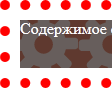

background-clip
Определяет, как цвет фона или фоновая картинка должна выводиться под границами. Эффект заметен при прозрачных или пунктирных границах.
Краткая информация
| Значение по умолчанию | border-box |
|---|---|
| Наследуется | Нет |
| Применяется | Ко всем элементам |
Синтаксис
background-clip: [padding-box | border-box | content-box]
[, [padding-box | border-box | content-box]]Значения
- padding-box
- Фон отображается внутри границ.
- border-box
- Фон выводится под границами.
- content-box
- Фон отображается только внутри контента.
Значений может быть несколько (для каждого из множественных фоновых рисунков), при этом значения разделяются между собой запятой.
Результат использования значений свойства background-clip для элемента с пунктирной рамкой толщиной 10 пикселей показан на рис. 1.
|  | ||
| padding-box | border-box | content-box |
Рис. 1. Результат применения разных значений
Пример
<!DOCTYPE html>
<html>
<head>
<meta charset="utf-8">
<title>background-clip</title>
<style>
.example {
background: #5f392f url(images/gear.png); /* Фоновый рисунок */
border: 10px dotted red; /* Параметры рамки */
background-clip: border-box; /* Фон под рамкой */
padding: 10px; /* Поля */
color: #fff; /* Цвет текста */
min-height: 48px; /* Минимальная высота */
}
</style>
</head>
<body>
<div class="example">Содержимое страницы</div>
</body>
</html>Объектная модель
Объект.style.backgroundClip
Примечание
Firefox до версии 4 поддерживает свойство -moz-background-clip и значения padding и border.
Спецификация
| Спецификация | Статус |
|---|---|
| CSS Backgrounds and Borders Module Level 3 | Возможная рекомендация |
Браузеры
| Internet Explorer | Chrome | Opera | Safari | Firefox | |
| border-box, padding-box | 9 | 1 | 10.5 | 3 | 4 |
| content-box | 9 | 1 | 12 | 3 | 4 |
| Android | Firefox Mobile | Opera Mobile | Safari Mobile | |
| border-box, padding-box | 4.1 | 14 | 12.1 | 3.2 |
| content-box | 4.1 | 14 | 12.1 | 3.2 |